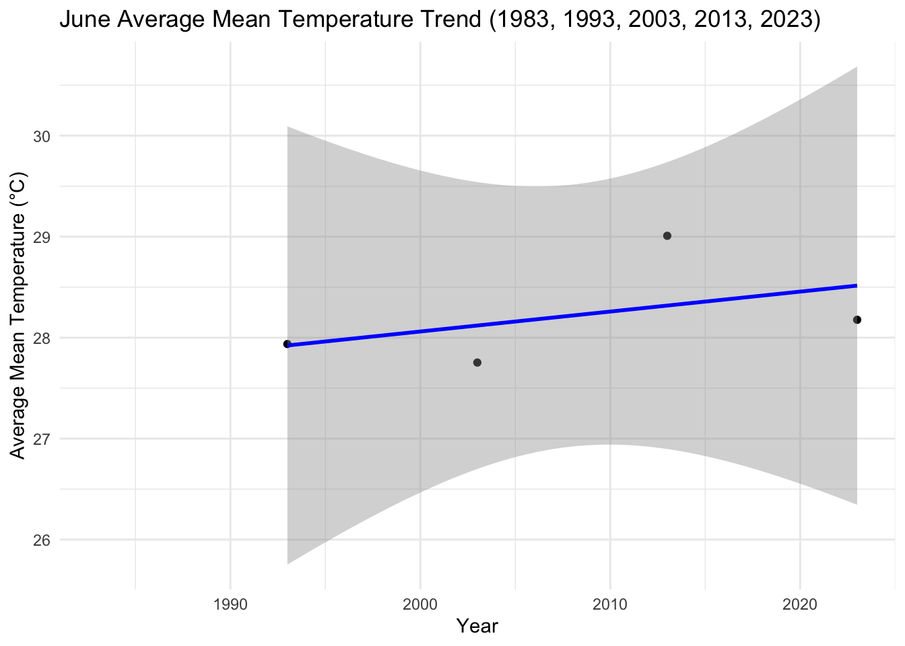

# Load the data from the Excel filefile_path <- ("../../data/Tengah_Jun_1983_2023.xlsx")df <-read_excel(file_path)# Convert non-numeric values to NA in 'Mean Temperature (°C)' columndf$`Mean Temperature (°C)`<-as.numeric(as.character(df$`Mean Temperature (°C)`))# Handle possible warning from conversion by coercing issues to NAdf$`Mean Temperature (°C)`[is.na(df$`Mean Temperature (°C)`)] <-NA# Calculate the mean temperature for each yearmean_temperatures <- df %>%group_by(Year) %>%summarize(MeanTemperatureJune =mean(`Mean Temperature (°C)`, na.rm =TRUE))# View the calculated mean temperaturesprint(mean_temperatures)
# A tibble: 5 × 2
Year MeanTemperatureJune
<dbl> <dbl>
1 1983 NaN
2 1993 27.9
3 2003 27.8
4 2013 28.8
5 2023 28.2
# Assuming 'mean_temperatures' is your data framemean_temperatures <-data.frame(Year =c(1983, 1993, 2003, 2013, 2023),MeanTemperatureJune =c(NA, 27.9, 27.8, 28.8, 28.2))# Remove rows with NA values for a cleaner plotmean_temperatures_clean <- mean_temperatures %>%drop_na()# Create an interactive plotp <-plot_ly(data = mean_temperatures_clean, x =~Year, y =~MeanTemperatureJune, type ='scatter', mode ='lines+markers',text =~paste("Year:", Year, "<br>Mean Temp:", MeanTemperatureJune), hoverinfo ='text') %>%layout(title ='Mean Temperature in June (1983 - 2023)',xaxis =list(title ='Year'),yaxis =list(title ='Mean Temperature (°C)'))# Display the plotp
# Display the column names of the data frame to confirm 'Day' is presentcolnames(df)
[1] "Station" "Year"
[3] "Month" "Day"
[5] "Daily Rainfall Total (mm)" "Highest 30 Min Rainfall (mm)"
[7] "Highest 60 Min Rainfall (mm)" "Highest 120 Min Rainfall (mm)"
[9] "Mean Temperature (°C)" "Maximum Temperature (°C)"
[11] "Minimum Temperature (°C)" "Mean Wind Speed (km/h)"
[13] "Max Wind Speed (km/h)"
library(plotly)library(dplyr)library(readxl) # Ensure this library is loaded to use read_excel# Load the data from the Excel filefile_path <- ("../../data/Tengah_Jun_1983_2023.xlsx")df <-read_excel(file_path)# Convert non-numeric values to NA in 'Mean Temperature (°C)' columndf$`Mean Temperature (°C)`<-as.numeric(as.character(df$`Mean Temperature (°C)`))df$`Mean Temperature (°C)`[is.na(df$`Mean Temperature (°C)`)] <-NA# Assuming 'mean_temperatures' holds the mean temperature for each June as calculated before# Create a new column 'Date' in df that represents each day in June for each yeardf <- df %>%mutate(Date =as.Date(paste(Year, Month, Day, sep="-")))# Plot the daily mean temperatures using `df`p <-plot_ly(data = df, x =~Date, y =~`Mean Temperature (°C)`, color =~as.factor(Year),type ='scatter', mode ='markers') %>%layout(title ='Daily Mean Temperature in June (1983 - 2023)',xaxis =list(title ='Date'),yaxis =list(title ='Mean Temperature (°C)'))# Add the text labels for hover informationp <- p %>%add_text(text =~paste("Date:", format(Date, "%Y-%m-%d"), "Mean Temp:", `Mean Temperature (°C)`),hoverinfo ='text', showlegend =FALSE)# Overlay the mean temperature for each June using `mean_temperatures`# Assuming June 15th as representative for the month's meanmean_temperatures <- mean_temperatures %>%mutate(Date =as.Date(paste(Year, "6", "15", sep="-")))p <- p %>%add_lines(data = mean_temperatures, x =~Date, y =~MeanTemperatureJune,line =list(color ='black', width =2),name ='Monthly Mean Temperature')# Display the plotp
library(plotly)library(dplyr)library(readxl) # Ensure this library is loaded to use read_excel# Load the data from the Excel filefile_path <- ("../../data/Tengah_Jun_1983_2023.xlsx")df <-read_excel(file_path)# Convert non-numeric values to NA in 'Mean Temperature (°C)' columndf$`Mean Temperature (°C)`<-as.numeric(as.character(df$`Mean Temperature (°C)`))df$`Mean Temperature (°C)`[is.na(df$`Mean Temperature (°C)`)] <-NA# Assuming 'mean_temperatures' holds the mean temperature for each June as calculated before# Create a new column 'Date' in df that represents each day in June for each yeardf <- df %>%mutate(Date =as.Date(paste(Year, Month, Day, sep="-")))# Create hover textdf$hover_text <-paste("Date:", format(df$Date, "%Y-%m-%d"), "Mean Temp:", df$`Mean Temperature (°C)`)# Plot the daily mean temperatures using `df`p <-plot_ly(data = df, x =~Date, y =~`Mean Temperature (°C)`, color =~as.factor(Year),type ='scatter', mode ='markers',text =~hover_text, # use the hover text created abovehoverinfo ='text', # show hover text onlymarker =list(size =5)) %>%layout(title ='Daily Mean Temperature in June (1983 - 2023)',xaxis =list(title ='Date'),yaxis =list(title ='Mean Temperature (°C)'))# Overlay the mean temperature for each June using `mean_temperatures`# Assuming June 15th as representative for the month's meanmean_temperatures <- mean_temperatures %>%mutate(Date =as.Date(paste(Year, "6", "15", sep="-"))) %>%mutate(hover_text =paste("Yearly Mean:", MeanTemperatureJune))p <- p %>%add_lines(data = mean_temperatures, x =~Date, y =~MeanTemperatureJune,line =list(color ='black', width =2),text =~hover_text, # use the hover text created abovehoverinfo ='text', # show hover text onlyname ='Monthly Mean Temperature')# Display the plotp
library(plotly)library(dplyr)library(readxl)# Load the data from the Excel filefile_path <- ("../../data/Tengah_Jun_1983_2023.xlsx")df <-read_excel(file_path)# Convert non-numeric values to NA in 'Mean Temperature (°C)' columndf$`Mean Temperature (°C)`<-as.numeric(as.character(df$`Mean Temperature (°C)`))df$`Mean Temperature (°C)`[is.na(df$`Mean Temperature (°C)`)] <-NA# Create a Date column for each entry in dfdf <- df %>%mutate(Date =as.Date(paste(Year, Month, Day, sep="-"))) %>%filter(!is.na(Date)) # Ensure there are no NA Dates# Assuming 'mean_temperatures' holds the mean temperature for each June as calculated beforemean_temperatures <- mean_temperatures %>%mutate(Date =as.Date(paste(Year, 6, 15, sep="-"))) # Use the middle of June as the representative date# Plot the daily mean temperatures using `df`p <-plot_ly() %>%add_markers(data = df, x =~Date, y =~`Mean Temperature (°C)`, color =~as.factor(Year),text =~paste("Date:", format(Date, "%Y-%m-%d"), "Mean Temp:", `Mean Temperature (°C)`),hoverinfo ='text', marker =list(size =5)) %>%layout(title ='Daily Mean Temperature in June (1983 - 2023)',xaxis =list(title ='Date'),yaxis =list(title ='Mean Temperature (°C)'))# Add the mean temperature points as markersp <- p %>%add_markers(data = mean_temperatures, x =~Date, y =~MeanTemperatureJune,marker =list(color ='black', size =10),name ='Mean Temperature')# Connect the mean temperature points with a linep <- p %>%add_lines(data = mean_temperatures, x =~Date, y =~MeanTemperatureJune,line =list(color ='black', width =2),name ='Mean Temperature Trend')# Display the plotp
# Load necessary librarieslibrary(readxl)library(ggplot2)library(dplyr)# Load the datafile_path <- ("../../data/Tengah_Jun_1983_2023.xlsx")data <-read_excel(file_path)# Replace missing values with NA and convert the Mean Temperature column to numericdata$`Mean Temperature (°C)`<-as.numeric(as.character(data$`Mean Temperature (°C)`))# Interpolate missing valuesdata <- data %>%group_by(Year) %>%mutate(`Mean Temperature (°C)`= zoo::na.approx(`Mean Temperature (°C)`, na.rm =FALSE)) %>%ungroup()# Calculate the average mean temperature for each yearaverage_temperatures <- data %>%group_by(Year) %>%summarise(AverageMeanTemperature =mean(`Mean Temperature (°C)`, na.rm =TRUE))# Fit a linear regression modelmodel <-lm(AverageMeanTemperature ~ Year, data = average_temperatures)# Prepare a summary of the model to get the slopemodel_summary <-summary(model)# Plottingggplot(average_temperatures, aes(x = Year, y = AverageMeanTemperature)) +geom_point() +geom_smooth(method ="lm", color ="blue") +labs(title ="June Average Mean Temperature Trend (1983, 1993, 2003, 2013, 2023)",y ="Average Mean Temperature (°C)", x ="Year") +theme_minimal()

# Print the slope of the regression linecoef(model)[["Year"]]